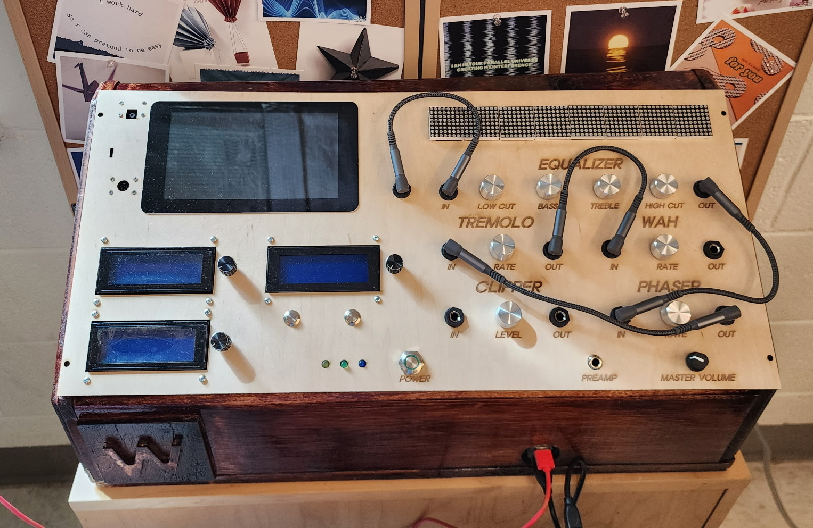
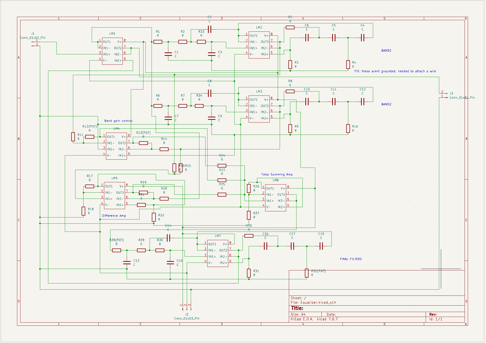
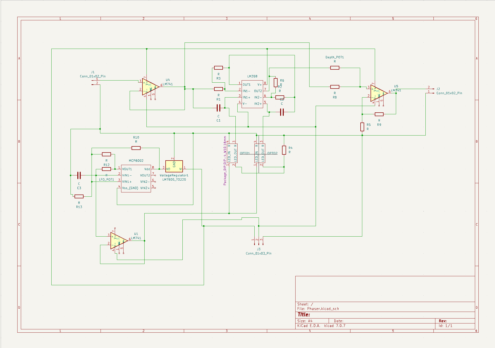
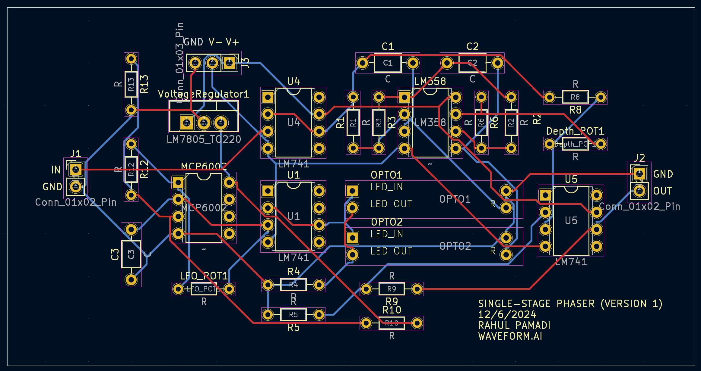

A synthesizer which aids new-user playability by translating language-based descriptions of a sound into a playable preset.

Typical synthesizers offer the musician a table of wave shapes—which dictate the initial timbre of the sound—and further control over sonic characteristics through analog or digital wave-shaping effects. The Waveform.ai synthesizer advances user control by implementing artificial intelligence in the process of sound design. By providing the synthesizer with a language-based description of the a sound—for example "warm, soft, and short"—they will receive a tone which best matches the described sonority. This functionality relieves the user from the steep learning curve associated with sound design, opening the world of synthesis to beginner musicians.
Waveform.ai was a multidisciplinary project supported by the William & Mary Arts and Science Exchange (ASE). The project consisted of an ambient, AI-driven synthesizer improvisation, a sensor-augmented flute performance, and concluded with a interactive live-coding finale.
My contribution to this project was the analog electronics chain, as well as training the classification neural network.
I designed each circuit using SPICE simulations and breadboard prototyping. Once I verified the prototypes behaved as I intended, I designed PCB schematics in KiCAD to fit into the final synthesizer. Here are schematics of some of these circuits.



Once all circuits were printed, I assembled them into the wooden body of the synthesizer. The signal chain was modular, meaning a user can connect the effects to eachother in any order they want, using 1/4in patch cables.
The team didn't want our project to sit in a lab its whole life. We demonstrated a 10-minute improvised ambient performance on the instrument as part of the ASE event for an audience of over 150 members.